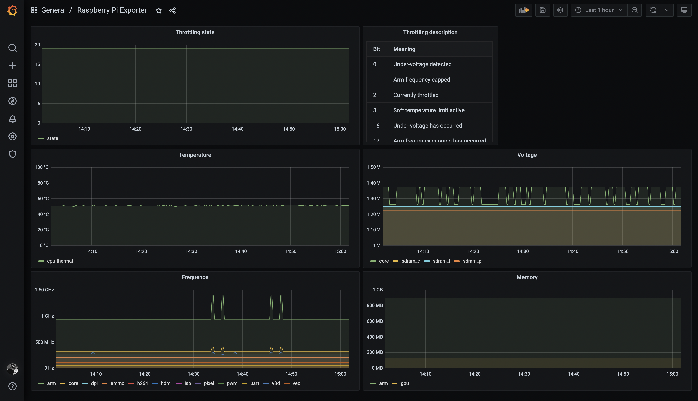

Сбор метрик с Raspberry Pi
Достаточно давно у меня появилась необходимость создать своё облако для объединения ресурсов и предоставления доступа ко внутренним сервисам.
В этом году я добавил в эту систему работу с метриками, и буквально пару дней назад сделал так, чтобы Prometheus из Docker контейнера смог собирать метрики с устройств в сети VPN. Однако в случае с Raspberry Pi обычного node-exporter мне стало недостаточно. Тк он не собирает такие важные метрики как напряжение, температура и частота процессора. Эти метрики показывают проблемы с питанием или перегревом Raspberry Pi, что является очень критичным.
Я нашел репозиторий teemow/prometheus-raspberry-exporter, который позволяет добавить эти метрики в node-exporter через collector.textfile. A чуть позже я нашел его форк от prontog, в котором получше именованы метрики и есть обработка прерывания работы.
Я решил немного дописать этот проект под свои нужды:
- Поправить документацию
- Поправить именование файлов и синтаксис кода
- Поправить путь к исполняемому файлу vcgencmd (тк в новом релизе Raspberry Pi OS нет
/opt/vc) - Добавить метрику
rpi_throttled(==vcgencmd get_throttled) - Добавить в Grafana dashboard для отображения этих метрик
- Добавить алерты для этих метрик в Prometheus
Как результат получился форк urpylka/prometheus-raspberry-exporter.

На будущее хочу разобраться как запускать это всё в Docker контейнере, пока не совсем понятно с чем и как взаимодействует vcgencmd. Кстати, в ходе работы наткнулся на неплохую статью на тему Использование консольной программы vcgencmd.
Ссылки по теме
Alerts with Prometheus
- Настройка Alertmanager Prometheus
- Create grafana alerts
- Мониторинг сервисов с Prometheus
- Prometheus alerts examples
- Осваиваем мониторинг с Prometheus. Часть 3. Настройка Prometheus server
- What’s the difference between group_interval, group_wait, and repeat_interval?
- Alertmanager configuration
Alertmanager + Telegram